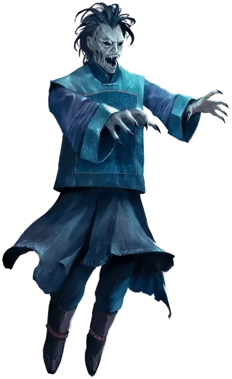

Цзянши
Jiangshi
Средняя Нежить

Класс Доспеха 16 (природный доспех)
Хиты 119 (14к8 + 56)
Скорость 20 футов
| мод | спас | ||
|---|---|---|---|
| СИЛ | 18 | +4 | +4 |
| ЛОВ | 3 | −4 | −4 |
| ТЕЛ | 18 | +4 | +8 |
| мод | спас | ||
|---|---|---|---|
| ИНТ | 17 | +3 | +7 |
| МДР | 14 | +2 | +6 |
| ХАР | 12 | +1 | +5 |
Иммунитет к состояниям испуг, истощение, отравление, очарование, паралич
Чувства тёмное зрение 120 футов, пассивное Восприятие 12
Языки все, известные при жизни
Опасность 9 (5000 опыта)
Бонус мастерства +4
Особенности
Слабости цзянши. Цзянши обладает следующими слабостями:
Страх перед собственным отражением. Если цзянши видит свое собственное отражение, он немедленно использует свою реакцию, если это возможно, чтобы отойти как можно дальше от отражения.
Восприимчивость к святым символам. В то время как цзянши носит или касается священного символа, он автоматически проваливает спасброски от эффектов, изгоняющих нежить.
Необычная природа. Цзянши не нуждается в воздухе.
Действия
Мультиатака. Цзянши совершает три размашистых удара и использует поглощение жизни.
Размашистый удар. Рукопашная атака оружием: +8 к попаданию, досягаемость 5 фт., одна цель. Попадание: 13 (2к8 + 4) дробящего урона.
Поглощение жизни. Цзянши черпает энергию из существа, которое он может видеть в пределах 30 футов от себя. Цель должна совершить спасбросок Телосложения Сл 16, получая 18 (4к8) урона некротической энергией при провале или половину этого урона при успехе. Цзянши восстанавливает хиты, равные количеству нанесённого урона некротической энергией. После восстановления хитов в результате этого действия цзянши получает следующие преимущества на 7 дней: его скорость увеличивается до 40 футов, и он получает скорость полёта, равную его скорости ходьбы, и может парить.
Гуманоид, убитый этой некротической энергией, поднимается как умертвие [wight] в конце хода цзянши. Умертвие [wight] ходит сразу после цзянши в порядке инициативы. Если это умертвие [wight] убьет гуманоида с помощью «Вытягивание жизни», то оно превратится в цзянши через 5 дней.
Смена формы. Цзянши превращается в Маленького или Среднего размера зверя, гуманоида или нежить, или принимает свой истинный облик. Его характеристики, за исключением его размера, одинаковы во всех обликах. Любое снаряжение, которое он носит или несёт, сливается или используется новым обликом (на выбор цзянши). Он принимает свой истинный облик, если умирает.
Описание
Когда душа попадает в ловушку внутри своего трупа, её горечь может оживить ее тело, создав цзянши. Эти мстительные мертвецы преследуют своих потомков и общины, которые они знали при жизни, сеют ужас и мстят за оказанное им пренебрежение или пренебрежение похоронными обрядами, которые привели к их проклятому воскрешению. Конечности цзянши поражает трупное окоченение, заставляя их держать перед собой одревенелые руки и ходить напряженной походкой. Из-за этого, наряду со способностью летать, многие называют их скачущими вампирами.
Днем цзянши прячутся в своих гробницах и скрытых руинах, чтобы избежать внимания живых. Ночью они выходят на охоту, чтобы высасывать жизнь из других существ, эта энергия поддерживает их неестественное существование и наделяет их великой силой. Гуманоиды, убитые цзянши, восстают как жаждущие жизни трупы и могут сами превратиться в цзянши, если будут питаться живыми.